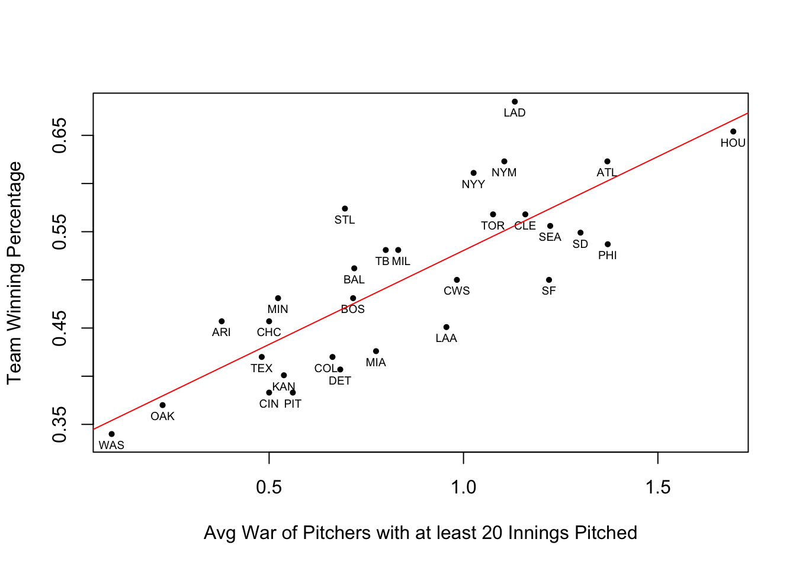

What does the WAR statistic mean and what can be inferred from higher scores?
Wins above replacement (WAR) is a statistic used to show how many more wins a player is worth than a replacement level player at the same position Like a free agent of a minor league player. The way to calculate it is different for position players and pitchers.
According to the MLB glossary, the formula for pitchers is, “Different WAR computations use either RA9 or FIP. Those numbers are adjusted for league and ballpark. Then, using league averages, it is determined how many wins a pitcher was worth based on those numbers and his innings pitched total.”
RA9 is runs allowed per 9 innings pitched and “FIP is similar to ERA, but it focuses solely on the events a pitcher has the most control over – strikeouts, unintentional walks, hit-by-pitches and home runs. It entirely removes results on balls hit into the field of play,” also from the MLB glossary.
To combat the possible difference of values from the different way of calculating WAR for pitchers, all statistics from last season will be taken from the same source.
Looking at pitchers that recorded at least 20 IP, data is from here.
Comparing WAR of pitchers and team win percentage in the 2022 season.
The regression lines shows that there is a strong positive corrlelation between how many wins a team gets and how high their average WAR of their pitchers is.
Houston was the 2022 World Series Winner and they had the biggest average war. Looking at past years is that a common occurrence?
| years | winners |
|---|---|
| 2022 | Houston Astros |
| 2021 | Atlanta Braves |
| 2020 | LA Dodgers |
| 2019 | Washington Nationals |
| 2018 | Boston Red Sox |
| 2017 | Houston Astros |
| 2016 | Chicago Cubs |
| 2015 | Kansas City Royals |
| 2014 | San Francisco Giants |
| 2013 | Boston Red Sox |
| 2012 | San Francisco Giants |
| 2011 | St. Louis Cardinals |
| 2010 | San Francisco Giants |
| 2009 | NY Yankees |
| 2008 | Philadelphia Phillies |
| 2007 | Boston Red Sox |
| 2006 | St. Louis Cardinals |
| 2005 | Chicago Whte Sox |
| 2004 | Boston Red Sox |
| 2003 | Florida Marlins |
| 2002 | Anaheim Angels |